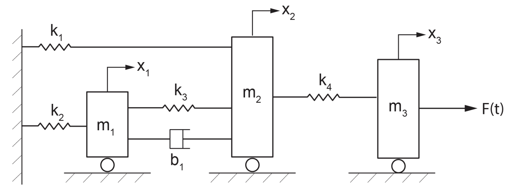
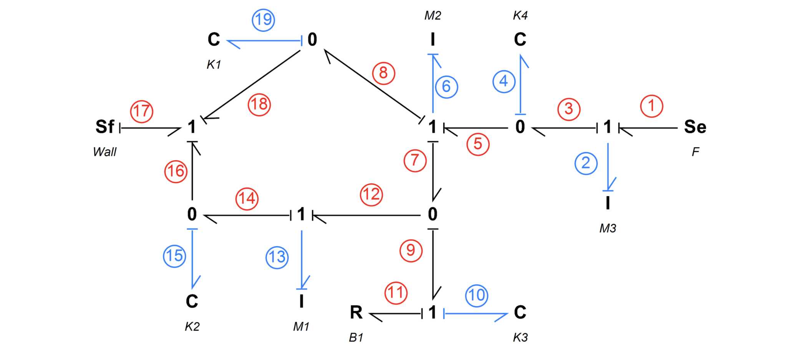
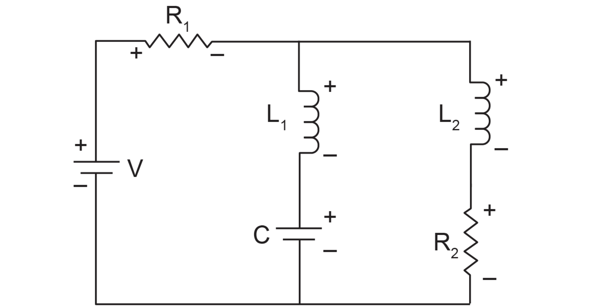
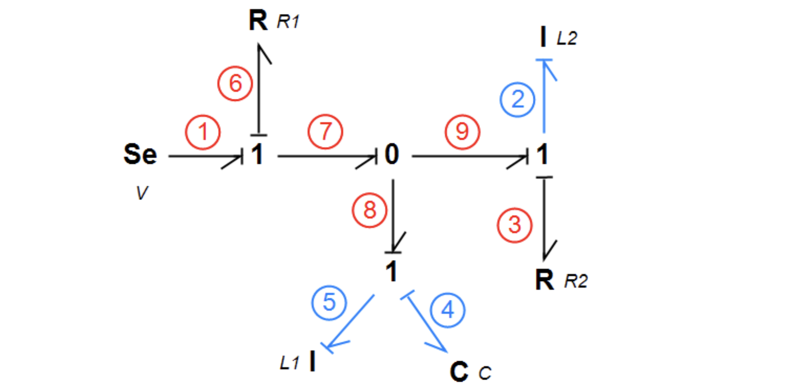

键合图建模与求解
目的
- 熟悉键合图从建模到提取公式的流程
- 求解微分方程（建设中...）
A - 机械系统案例
A1 - 三自由度机械系统图
下图为一个三自由度系统的机械模型案例，系统包含：
- 4根弹簧
- 1个阻尼器
- 3个质量体
对应BG模型中：
- 4个\(C\)元素，弹簧刚度分别为\(k_1,\ k_2,\ k_3,\ k_4\)
- 1个\(R\)元素，阻尼系数为\(b_1\)
- 3个\(I\)元素，质量分别为\(m_1,\ m_2,\ m_3\)
对应的系统状态有4个广义位移\(q\)，以及3个广义动量\(p\)

A2 - 构建BG模型
为上图建立BG模型，并给每一个能键（power bond）标一个号做识别用，思路如下：
- \(S_e\)为系统外力\(F\)，将\(e\)作用在\(I:m_3\)上，得到
编号1能键 - 由于\(I:m_3\)是一个质量体，其左右两侧速度相同，所以在\(I:m_3\)处做一个\(1-junction\)元素作为流均衡器（所连接的能键速度相同）。根据BG建模原则，\(I\)元素的建模倾向于\(e\)作为\(I\)的输入、\(f\)作为\(I\)的输出，于是得到
编号2能键 - \(I:m_3\)的左侧为\(C:k_4\)弹簧，弹簧左右受力相同，所以在\(C:k_4\)处做一个\(0-junction\)元素作为势均衡器（所连接的能键力相同），输入为前一个\(1-junction\)的\(f\)，反馈为到\(I:m_3\)上的\(e\)，得到
编号3能键。弹簧\(C:k_4\)的\(e\)给到\(I:m_3\)的方向为指向质量体，所以因果线（causality stroke）放在编号1和编号2的\(1-junction\)上 - 根据BG建模原则，\(C\)元素的建模倾向于\(f\)作为\(C\)的输入、\(e\)作为\(C\)的输出，于是得到
编号4能键 - 弹簧\(C:k_4\)的左侧为质量体\(I:m_2\)，同理，在\(I:m_2\)处做一个\(1-junction\)元素作为流均衡器，其输出为上一个\(0-junction\)的力，反馈为速度，因果线放在\(1-junction\)元素上，得到
编号5能键 - 与步骤2对\(I\)的建模类似，得到
编号6能键 - 由于\(I:m_2\)连了3根弹簧\(C:k_4,\ C:k_3,\ C:k_1\)和1个阻尼器\(R:b_1\)，分别给一个\(e\)到\(I:m_2\)，和第2步类似，在\(I:m_2\)处给一个\(1-junction\)元素作为流均衡器。输入为
编号5的力，输出为编号8和编号7 - 注意
编号7和编号9是BG建模的一个简化：因为弹簧\(C:k_3\)和阻尼\(R:b_1\)在左右两侧的流差（速度差）是一样的，它们可以通过\(0-junction\)元素的特性，即流收集器（flow summator）来表达\(f_{self}=f_{input}-f_{output}\)，这里的\(f_{self}\)指的是\(C:k_3\)和\(R:b_1\)的流（速度）。然后，通过一个\(1-junction\)元素，将它们表达为\(e_{input}=e_{b1}+e_{k3}\)，这里指的是弹簧\(C:k_3\)和阻尼\(R:b_1\)的合力，会反馈到\(0-junction\)元素上，于是得到编号9、编号10和编号11三个能键。总结来说，通过\(0-junction\)和\(1-junction\)元素的连用，可以表达多个“平行”的\(C/R\)元素。 - 在\(C:k_3\)和阻尼\(R:b_1\)的左边连着质量体\(I:m_1\)，和第5步同理，得到
编号12能键 - 和第2-4步同理，可以得到
编号13、编号14和编号15的能键 - 和第2-3步同理，可以得到
编号8和编号19的能键 - 系统的最左边为墙壁，墙壁边上连着弹簧。墙壁不是\(I\)元素，它只是一个边界条件，可以想象为墙壁这个点的速度一样，所以在墙壁处做一个\(1-junction\)元素，作用是速度均衡（即弹簧\(C:k_1\)左侧、\(C:k_2\)左侧和墙壁的速度一样），于是得到
编号16和编号18能键 - 最后，由于力是给到墙壁上，\(e\)的指向为墙壁，即\(S_f\)，得到
编号17能键
构建好的BG模型如下图所示：

A3 - BG模型的系统方程
A3.1 通用方程和基本问题
在系统的能量管理角度上进行考虑，一个系统的能量输入（例如通过力）最终只有两个去向：
- 能量储存
- 能量耗散
于是，能量储存元素，即动能储存元素\(I\)和势能储存元素\(C\)是研究动态系统的最重要元素，在BG模型中也是如此。
系统方程的通用表达为：
\(\dot x_i=F_i(x_i,u_i,t)\)，其中，\(\dot x_i\)是系统中状态变量对时间的微分，\(u_i\)是系统的输入
这个通用表达比较抽象，接下来会根据上面这个机械系统的例子进一步具体化。
在构建完BG模型后，最重要的两个要思考的问题为：
- 每个组件/元素给系统发送了什么？-- 组件到系统
- 系统给每个组件/元素反馈了什么？-- 系统到组件
这两个问题涉及到写出系统状态方程所需要的状态变量：\(I\)元素中的广义动量\(p\)，\(C\)元素中的广义位移\(q\)
A3.2 组件到系统
每个组件/元素给系统发送了什么
考虑这个问题，就需要考虑系统外部输入、\(I\)元素的输入、\(C\)元素、\(R\)元素的输入和边界约束。
在这个例子中，根据上图对能键的手动编号可以得到：
- 系统外部有1个：
- \(S_e\)外力输入: \(e_1=F\)
- \(I\)元素有3个，它们对系统的输入为\(f\)，平移机械系统中表示速度，通俗的表达\(v=\displaystyle\frac{p}{m}\)：
- \(I:m_3\)元素对系统的输入为: \(f_2=\dot q_2=\displaystyle\frac{p_2}{m_3}\)
- \(I:m_2\)元素对系统的输入为: \(f_6=\dot q_6=\displaystyle\frac{p_6}{m_2}\)
- \(I:m_1\)元素对系统的输入为：\(f_{13}=\dot q_{13}=\displaystyle\frac{p_{13}}{m_1}\)
- \(C\)元素有4个，它们对系统的输入为\(e\)，平移机械系统中表示力，通俗的表达\(F=k(x_2-x_1)\)：
- \(C:k_4\)元素对系统的输入为: \(e_4=k_4 q_4\)
- \(C:k_3\)元素对系统的输入为: \(e_{10}=k_3 q_{10}\)
- \(C:k_2\)元素对系统的输入为: \(e_{15}=k_2q_{15}\)
- \(C:k_1\)元素对系统的输入为: \(e_{19}=k_1q_{19}\)
- \(R\)元素有一个，它们对系统的输入为\(e\)，平移机械系统中表示力，通俗的表达\(F_{friction}=bv\)
- \(R:b_1\)元素对系统的输入为: \(e_{11}=b_1 f_{11}\)
- 边界约束有1个，是对速度的约束：
- \(S_f\)对系统的流约束: \(f_{17}=V_{wall}\)
至此，我们得到了从组件/元素到系统的输入，其中包含了状态变量\(p_i\)和\(q_i\)，以及已知的外力\(F\)和边界约束\(V_{wall}\)
A3.3 系统到组件
系统给每个组件/元素反馈了什么
考虑这个问题，只要考虑系统对储能元素的输入，即\(I\)元素和对\(C\)元素：
- 对于动能储能元素\(I\)，\(e=\dot p\)，即力等于广义动量对时间的微分。通俗来说是微小时间段上的冲量对时间求微分。
- 对于势能储能元素\(C\)，\(f=\dot q\)，即速度等于广义位移对时间的微分。
根据上图对能键的手动编号，以及在3.2 组件到系统中得到的公式，可以推导出：
- \(I\)元素有3个，系统对它们的输入为\(e\)，例子中为力：
- 系统对惯性元素\(I:m_3\)的输入为: \(e_2=\dot p_2=e_1-e_3=e_1-e_4=F-k_4q_4\)
- 系统对惯性元素\(I:m_2\)的输入为:\(e_6=\dot p_6=e_5-e_7-e_8=e_4-(e_{10}+e_{11})-e_{19}\)
- 已知\(e_4,\ e_{10},\ e_{19}\)
- 推导\(e_{11}=b_1f_{11}=b_1f_{9}\)
- 推导\(f_9=f_7-f_{12}=f_6-f_{{13}}=\displaystyle\frac{p_6}{m_2}-\frac{p_{13}}{m_3}\)
- 推导\(e_{11}=b_1f_{11}=b_1f_9=b_1(\displaystyle\frac{p_6}{m_2}-\frac{p_{13}}{m_3})\)
- 结果: \(e_6=\dot p_6=k_4q_4-k_3q_{10}-b1\displaystyle\frac{p_6}{m_2}+b1\frac{p_{13}}{m_3}-k_1q_{19}\)
- 系统对惯性元素\(I:m_1\)的输入为: \(e_{13}=\dot p_{13}=e_{12}-e_{14}=e_9-e_{15}=(e_{10}+e_{11})-e_{15}\)
- 根据推导\(e_{11}=b_1f_{11}=b_1(\displaystyle\frac{p_6}{m_2}-\frac{p_{13}}{m_3})\)
- 结果: \(e_{13}=\dot p_{13}=k_3q_{10}+b_1\displaystyle\frac{p_6}{m_2}-b_1\frac{p_{13}}{m_3}-k_2q_{15}\)
- \(C\)元素有4个，系统对它们的输入为\(f\)，例子中为速度：
- 系统对势能元素\(C:k_4\)的输入为: \(f_4=\dot q_4=f_3-f_5=f_2-f_6=\displaystyle\frac{p_2}{m_3}-\frac{p_6}{m_2}\)
- 系统对势能元素\(C:k_3\)的输入为: \(f_{10}=\dot q_{10}=f_9=f_7-f_{12}=f_6-f_{13}=\displaystyle\frac{p_6}{m_2}-\frac{p_{13}}{m_1}\)
- 系统对势能元素\(C:k_2\)的输入为: \(f_{15}=\dot q_{15}=f_{14}-f_{16}=f_{13}-f_{17}=\displaystyle\frac{p_{13}}{m_1}-V_{wall}\)
- 系统对势能元素\(C:k_1\)的输入为: \(f_{19}=\dot q_{19}=f_8-f_{18}=f_6-f_{17}=\displaystyle\frac{p_6}{m_2}-V_{wall}\)
至此，我们得到了系统到组件的输入，包含状态变量对时间的导数\(\dot p_i\)和\(\dot q_i\)
A3.4 系统方程组
通过前面的3.2-组件到系统，和3.3-系统到组件，一共得到7个方程组，包含7个变量及其导数，可以将它们列出来：
\(\begin{bmatrix}\dot p_2\\\dot q_4\\\dot p_6\\\dot q_{10}\\\dot p_{13}\\\dot q_{15}\\\dot q_{19}\end{bmatrix}=\begin{bmatrix}&0&-k_4&0&0&0&0&0&\\&1/m_3&0&-1/m_2&0&0&0&0&\\&0&k_4&-b_1/m_2&-k_3&b_1/m_1&0&-k_1&\\&0&0&1/m_2&0&-1/m_1&0&0&\\&0&0&b_1/m_2&k_3&-b_1/m_1&-k_2&0&\\&0&0&0&0&1/m_1&0&0&\\&0&0&1/m_2&0&0&0&0&\end{bmatrix}\begin{bmatrix}p_2\\q_4\\p_6\\q_{10}\\p_{13}\\q_{15}\\q_{19}\end{bmatrix}+\begin{bmatrix}F\\0\\0\\0\\0\\-V_{wall}\\-V_{wall}\end{bmatrix}\)
以上系统方程组的形式为：
\(\dot x=Ax+b\)，其中\(A\)和\(b\)已知，需要求\(x\)
B - RLC电路案例
B1 - RLC电路图
下图为一个一个由电阻、电感和一个电容并联组成的RCL两环电路，包含：
- 2个电感
- 1个电容
- 2个电阻
- 1个电源
对应的BG模型有：
- 2个\(I\)元素：电感\(L_1\)和\(L_2\)
- 1个\(C\)元素：电容\(C\)
- 2个\(R\)元素：电阻\(R_1\)和\(R_2\)
- 1个系统输入：电源\(S_e\)

B2 - 构建BG模型
为上图构建BG模型，基本思路如下：
- 左边、中间和右边三条线路电压相同，做一个\(0-junction\)元素在中间，作为势均衡器（电气系统中电压相同）
- 左边电路有系统输入电源\(S_e\)和电阻\(R:R_1\)，电流相同，做一个\(1-junction\)元素，作为流均衡器（电气系统中电流相同）。由于\(S_e\)是源，\(e\)即电压指向\(1-junction\)元素，得到
编号1能键 - 电流流过电阻，\(f\)指向\(R:R_1\)，得到
编号6能键 - 根据BG建模规则，对\(I:L_2\)和\(I:L_1\)，可以分别得到
编号2和编号9能键 - 根据BG建模规则，对\(C:C\)可以得到
编号4能键 - 对于\(R:R_1\)和\(R:R_2\)，输入是\(f\)，可以得到
编号6和编号3能键 - 由于左边是电源侧，得到
编号7能见，中间和右侧是被供能侧，得到编号8和编号9能键

B3 - BG模型的系统方程
B3.1 组件到系统
每个组件/元素给系统发送了什么
按照上图手动编号，组件/元素给系统发送：
- 1个外部电压源：
- \(S_e\)为\(e_1=V\)
- \(I\)元素有2个，通俗的表达自感电动势\(E=\displaystyle\frac{d\Psi}{dt}=L\frac{di}{dt}\)：
- \(I:L_1\)元素对系统的输入为: \(f_5=\dot q_5=p_5/L_1\)
- \(I:L_2\)元素对系统的输入为: \(f_2=\dot q_2=p_2/L_2\)
- \(C\)元素有1个，通俗的表达电压\(U=\displaystyle\frac{Q}{C}\)：
- \(C:C\)元素对系统的输入为: \(e_4=q_4/c\)
- \(R\)元素有2个，通俗的表达电压\(U=RI\)：
- \(R:R_1\)元素对系统的输入为: \(e_6=R_1f_6\)
- \(R:R_2\)元素对系统的输入为: \(e_3=R_2f_3\)
B3.2 系统到组件
系统给每个组件/元素反馈了什么
考虑这个问题，只要考虑系统对储能元素的输入，即\(I\)元素和对\(C\)元素：
- 对于动能储能元素\(I\)，\(e=\dot p\)，即电压等于广义动量（磁通量）对时间的微分\(E=\displaystyle\frac{d\Psi}{dt}\)。
- 对于势能储能元素\(C\)，\(f=\dot q\)，电流等于电容量乘以电压在时间上的微分\(I=C\displaystyle\frac{dU}{dt}=\frac{dq}{dt}\)。
根据上图对能键的手动编号，以及在3.1 -组件到系统中得到的公式，可以推导出：
- \(I\)元素有2个，系统对它们的输入为\(e\)，例子中为电压：
- 系统对惯性元素\(I:L_1\)的输入为: \(e_5=\dot p_5=e_8-e_4=e_7-e_4=(e_1-e_6)-e_4=V-R_1f_6-\displaystyle\frac{q_4}{c}\)
- 推导\(f_6=f_8+f_9\)
- 推导\(f_8=f_5=\displaystyle\frac{p_5}{L_1}\)
- 推导\(f_9=f_2=\displaystyle\frac{p_2}{L_2}\)
- 结果：\(f_6=\displaystyle\frac{p_5}{L_1}+\frac{p_2}{L_2}\)
- 结果：\(e_5=\dot p_5=V-R_1\displaystyle\frac{p_5}{L_1}-R_1\frac{p_2}{L_2}-\frac{q_4}{c}\)
- 系统对惯性元素\(I:L_2\)的输入为: \(e_2=\dot p_2=e_9-e_3=e_7-e_3=e_1+e_6-e_3=V-R_1f_6-R_2f_3\)
- 推导\(f_3=f_2=\displaystyle\frac{p_2}{L_2}\)
- \(f_6\)已经推出
- 结果：\(e_2=\dot p_2=V-R_1\displaystyle\frac{p_5}{L_1}-R_1\frac{p_2}{L_2}-R_2\frac{p_2}{L_2}\)
- 系统对惯性元素\(I:L_1\)的输入为: \(e_5=\dot p_5=e_8-e_4=e_7-e_4=(e_1-e_6)-e_4=V-R_1f_6-\displaystyle\frac{q_4}{c}\)
- \(C\)元素有1个，系统对它的输入为\(f\)，例子中为电流：
- 系统对势能元素\(C:C\)的输入为: \(f_4=\dot q_4=f_5=\displaystyle\frac{p_5}{L_1}\)
B3.3 系统方程组
通过3.1-组件到系统和3.2-系统到组件，一共得到3个方程：
\(\begin{bmatrix}\dot p_2\\\dot q_4\\\dot p_5\end{bmatrix}=\begin{bmatrix}&-(\displaystyle\frac{R_1}{L_2}+\frac{R_2}{L_2})&0&-\displaystyle\frac{R_1}{L_1}&\\&0&0&\displaystyle\frac{1}{L_1}&\\&-\displaystyle\frac{R_1}{L_2}&-\displaystyle\frac{1}{c}&-\displaystyle\frac{R_1}{L_1}\end{bmatrix}\begin{bmatrix}p_2\\q_4\\p_5\end{bmatrix}+\begin{bmatrix}V\\0\\V\end{bmatrix}\)
以上系统方程组的形式为：
\(\dot x=Ax+b\)，其中\(A\)和\(b\)已知，需要求\(x\)
求解系统方程
显式求解
例如案例A和案例B都是线性方程组，每一个方程都是一个ODE方程。
所以，要求解的是一个系统一阶微分方程组（system of ode equations），\(n\)为方程的个数。
非迭代求解
和求一个ODE一样，对系统方程组\(\dot x=\displaystyle\frac{dx}{dt}=Ax+b_i\)，
可以使用前向欧拉方法，选取一个步长\(h\)，\(i\)是第\(i\)个方程，\(k\)是迭代的次数，则有：
\(x_{i}^{k+1}=x_i^k+h(A_ix_i^k+b_i),\ i=1,2,...,n,\ k=0,1,...\)
也可以使用RK4法，选取一个步长\(h\)，则有：
\(x_i^{k+1}=x_i^k + \displaystyle\frac{h}{6}(k_1 + 2k_2 + 2k_3 + k4)\)，其中：
\(\begin{cases} k_1 = A_ix_i^k+b_i \\k_2=A_i(x_i^k+h\displaystyle\frac{k_1}{2})+b_i \\ k_3=A_i(x_i^k+h\displaystyle\frac{k_2}{2})+b_i \\ k_4=A_i(x_i^k+hk_3)+b_i \end{cases}\)
非迭代求解，则每个方程第\(k\)步求出的结果，不会给到其他方程使用，类似雅可比迭代。好处是可以并行。
迭代求解
迭代求解，类似高斯-塞德尔迭代，每个方程\(i\)的第\(k\)步求出的结果，会更新到\(x_i^k\)，给其他方程\(x_j,j\neq i\)使用。
但是因为案例A和案例B中的方程顺序，并不是解线性系统\(Ax=b\)中的\(x_i\)都是按顺序从上到下排列的，可能得排序和判断，比较复杂，不知道有没有必要。
隐式求解
建设中...